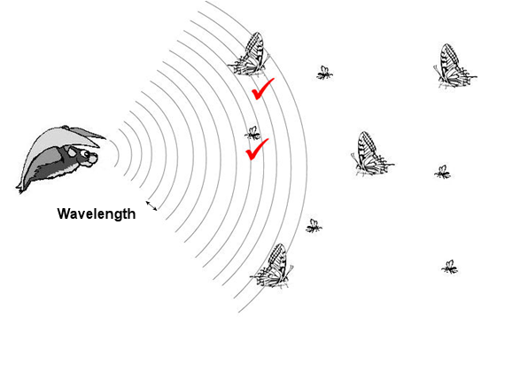
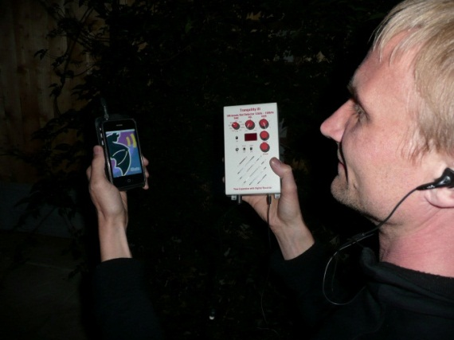

We are on a World Tour!
Starting from November 2015 Bat Detective is on a World Tour! We’ll be regularly uploading new data from places across the globe, from Europe to Africa, North America and Asia, each with its own selection of bat species. Read more about where we’re visiting and the science behind Bat Detective here.
Start your search
Jump right in and begin classifying calls. Take your ears on a drive through our database - and tell us what you see and hear. Listen out for bats, insects and other sounds.
Discuss the findings
Have you found a particularly interesting bat call? Having trouble distinguishing bat calls from insect noise? Have a question about bats, or a crazy theory about how bats use sound? Head over to the Bat Detective Forum to discuss your findings with others including the Bat Detective team.


Why bats?
Bats are mammals (like us) that have modified their hands and fingers to create wings for powered flight. Despite their description in many languages meaning blind or flying mice (murciélago, Fledermaus), they are neither blind nor mice. Bats are more closely related to cats and dogs than to rodents. Although most bats are around 20g (the weight of a squash ball), bats range in size from the tiny bumblebee bat at under 2g to the flying fox at a whopping 1.5Kg. Out of the 1,200 or so species, one in every five species is threatened with extinction in the next 50 years. Some bat species in North America have undergone dramatic declines in the last few years owing to a new disease (White-nose syndrome) that is threatening populations to extinction.

Why are we recording bat calls?
Many people believe that monitoring the status of bat populations can help tell us about the health of a natural environment as a whole; the bats serve as an early warning, like a canary in a coal mine. This is because bat species are distributed all over the world, and provide lots of services to humans through controlling pests by eating vast quantities of insects and pollinating and dispersing commercially important crops (for example bananas, tequila). Bat biology also makes them sensitive to human impacts, for example they typically only have one offspring a year and so bat populations take a long time to recover after disturbance. Many species are also very sensitive to climate and migrate or hibernate in different seasons, making them particularly vulnerable to climate change.
Although it is really important to monitor bat populations, it is difficult to do with traditional visual surveys as bats are mostly small, nocturnal and very hard to catch. More recently, a growing number of bat surveys are been done acoustically because bats ‘leak’ information about themselves into the environment. This is because they use sound to find their way around, hunt for food and to socialise. Over 1000 species of bats use sound in this way, with the rest of the species (Old World fruit bats or flying foxes) relying more on their eyes and noses to find food.
When bats are using sound to find their way around or to hunt, they emit a call and listen and interpret echoes as the call bounces off objects in the environment (echolocation). As a bat gets closer to its prey, the bat needs more information and calls get closer together ending in a ‘feeding buzz’. Bats tend to use ultrasonic frequencies for their calls (above 20 kHz) because shorter wavelengths are more likely to hit and bounce off smaller objects, and so give the bat more detail about its environment. However, higher frequency sounds tend to not travel as far as sounds of lower frequency, so there is a trade-off between hearing in fine detail and hearing long distances. Calls that bats use for socialising are not used for echolocation but communication, and these calls tend to be lower in frequency and have a more complex structure. Only under a third of all the echolocation calls of bats worldwide are known and even less is understood about social calls. Perhaps only 5% of all species social calls have been recorded.
What kind of data are we looking at?
There are lots of different methods to detect bat calls but they all involve using a special ultrasonic microphone to pick up bat calls (a bat detector) and to transform these into something we can hear or see. More sophisticated methods transform the ultrasonic call into a ‘sonogram’ so that you can see the call or sequence of calls clearly. Sonograms show calls visually and display the frequency of the call going up along the side of the image and time going along the bottom, and the loudness of the call is shown by how intense the colour of the call is. We can extract details about different calls from spectrograms and develop methods to tell us exactly what species they belong to – enabling us to track populations of these species by making recordings along set surveys every year.
Typically many hours of recordings are made at night by researchers using bat detectors and the most difficult part of the process is finding bat calls in these recordings! For example, for a 1 hour recording it will take 6 hours to go through the files to find all the calls and detail them. There are existing automatic computer programmes that find calls in recordings, but these aren’t very good at finding calls in poor recordings where a bat call is mixed up with other sounds like insects or a lot of background noise. Existing programmes also can’t tell the difference between the different types of bat calls (search and feeding echolocation calls and social calls). Additionally, bat echolocation calls are emitted in a continuous stream as the bat tries to figure out where it is and where its food is and existing programmes can’t pick out which calls come from the which sequence.
How do Citizen Scientists help?
This is where you come in! Humans are absolutely fantastic at hearing and seeing the difference between a bat and a non-bat call, the different types of calls and what sequence a call belongs in. We need your help going through our recordings to pick out the different calls. The ultimate goal is to use your classifications to make a new automatic programme that researchers all over the world can use to extract information out of their recordings, making it really easy to track populations of bats. This will make understanding how bat populations are being effected by global change much easier.
Each region of the world has different bats, the areas with the most bats or ‘bat hotspots’ are places like northern South America with over 200 species in an area! Bat Detective aims to develop these new automatic programmes for bats all over the world but we are starting our journey in Europe, where we know a lot about the bats already. Over the course of the project we will release data from more areas from around the world. In Europe, there are over 40 species of bats, they all use echolocation to eat insects. Most species hibernate to escape the food shortage in insects during the winter. Some other bat species migrate to other parts of Europe during winter, but we know very little about which species do this. In the summer, most species split into separate female and male roosts (in buildings, tree cavities, under bridges, caves), where the males just chill out whilst the females busily gather insects to raise their baby. During the autumn the males and females come back together again to mate and then don’t emerge again until the next spring. Check out the Bats page to see some examples of European bats whose calls you might see and hear in our recordings!
Some examples of the European bats whose calls you might see and hear in our recordings.

Common pipistrelle
Pipistrellus pipistrellusThe common pipistrelle is thought to be one of the most common European bats, weighing around 5 grams. It has a rapid, agile flight and forages along edges of treelines, hedgerows and water edges. A single pipistrelle can eat 3,000 tiny insects in just one night!

Soprano pipistrelle
Pipistrellus pygmaeusThe soprano pipistrelle looks so similar to a common pipistrelle that it was only discovered as a separately species a few years ago. It turns out that the common and soprano pipistrelle are as different as lions and tigers are to each other. The soprano pipistrelle uses a higher echolocation frequency than the common pipstrelle (hence its name).

Nathusius’ pipistrelle
Pipistrellus nathusiiThe Nathusius’ pipistrelle is thought to be migratory in Europe but this is not well understood. For example, in the UK we only discovered that it was a resident species in 1997, previous to that we thought it was a migrant from continental Europe. It has a slower, less manoeuvrable flight than other pipistrelles and has a lower frequency call.

Daubenton's bat
Myotis daubentoniiThe Daubenton's bat (or water bat) is found throughout Europe and feeds by skimming insects from the water's surface with their large hairy feet or tail. This species has a broadband call (goes through a large range of frequencies) to gather a lot of information while it forages close up to the water.

Noctule
Nyctalus noctulaThe noctule has long narrow wings and flies in a straight line, very high and fast. It has an extremely loud, very low frequency echolocation call (one of the loudest sounds in nature) that travels a long distance.

Greater horseshoe bat
Rhinolophus ferrumequinumHorseshoe bats possess a distinctive horseshoe-shaped nose-leaf. These bats forage in dense canopy in woodland have very high constant frequency calls that let them distinguish very fine details of their environment.

The sonograms on the site are from thousands of hours of ultrasonic recordings made on bat surveys by volunteers all over the world. Many of the surveys were made through the Indicator Bats Program (iBats) which monitors bat populations globally by listening to the sounds bats use to navigate and find food. iBats is a partnership project between national conservation groups in many different countries and the Zoological Society of London and The Bat Conservation Trust, and is funded by The Darwin Initiative and The Leverhulme Trust.
The recordings on Bat Detective were mostly made by iBats volunteers using special ultrasonic detectors. These detectors listen to sounds for 340ms snapshots at a time and then slows down the sound by ten times and plays back the sound through the detector. The detector then listens again for 340ms and so on until the survey is finished. Bats use sound at high frequencies, so slowing down the sound means that the frequency is lowered and it can be recorded. Volunteers can record the sounds on recording devices like a minidisk or a Zoom. The volunteers record sounds for 90 minutes about 30 minutes after sunset, and typically use a GPS to also record the route they have taken. Volunteers can walk or cycle their route but many typically drive the route with a car at speeds of 25km/hour, so that they can survey more of their area. More recently, we have developed an iBats app for the Android and iPhone which when attached to the bat detector with a special cable, records the sound and the GPS route at the same time and uploads to the iBats website automatically.
Many people want to get involved in detecting bats in their local area. The best way to start listening to bats is to contact your nearest wildlife conservation group and see if anyone is doing any bat detecting that you can come along on. If you are really keen, there are some cheap and simple detectors that you can buy if you want to start listening to bats on your own (e.g., heterodyne detectors). However, if you want to investigate the sounds in more detail and be more confident about identifying the calls to species, you will need more expensive sophisticated detectors (e.g., frequency division detectors). Although the recordings of bats made with frequency division detectors are sufficient for many purposes, this type of bat detector doesn’t capture all of the variation in the call and can be less reliable to identify species. The recordings made by the iBats volunteers are made with time expansion or real-time detectors. Using these types of detectors, all of the variation in the calls is captured, making identifications easier. As these detectors are expensive, iBats volunteers tend to be part of a group that raises funds to buy some equipment and they monitor an area together as a community. Please contact the Bat Detective team if you are interested in setting up an iBats community group in your area.
For the initial launch of Bat Detective, we are using the recordings made by a number of different iBats community groups and other organisations in Europe. These include iBats Romania (Romanian Bat Protection Association), iBats Bulgaria (Green Balkans), iBats Hungary, iBats Ukraine, iBats Russia (Presevet), iBats UK (Bat Conservation Trust). Recordings have also been donated by partners in BatLife Europe.
Bat Detective is a partnership project between University College London, Zoological Society of London, The Bat Conservation Trust, BatLife Europe, University of Auckland, and the Citizen Science Alliance. The sonograms on the site are provided by thousands of volunteers and conservation organisations around the world recording bats as part of the Indicator Bats Program (iBats) and other conservation monitoring programmes.

University College London (UCL) is London’s leading multidisciplinary university with over 8,000 staff and 25,000 students. UCL was founded in 1826 as a radically different university, opening up English higher education for the first time to people of all beliefs and social backgrounds. Bat Detective is supported by the Research Department of Genetics, Evolution and Environment (GEE), the Centre for Mathematics and Physics in the Life Sciences and Experimental Biology (CoMPLEX) and the Centre for Computational Statistics and Machine Learning (CSML).
The Zoological Society of London (ZSL) was founded in 1826 by Sir Stamford Raffles and is a charity devoted to the worldwide conservation of animals and their habitats. Bat Detective is supported by The Institute of Zoology (IoZ), the research division of ZSL specialising in the conservation, monitoring and health of animal species and their habitats.
The Bat Conservation Trust (BCT) works to secure the future of bats in our changing world. Together with volunteers, experts and the public, BCT discover more about bats, take action to conserve bats and habitats and inspire thousands of people to do their bit for bats.
BatLife Europe http://www.batlife-europe.info is a newly formed international NGO. It is built from a partnership of national bat conservation organisations that are committed to promoting the conservation of all bat species and their habitats throughout Europe.
The University of Auckland is New Zealand's largest and most highly ranked university. Founded in 1883 in an disused courthouse an jail, the University now stretches across 5 campuses, hosting more than 40,000 undergraduate and postgraduate students across eight faculties. The main University campus is located in the heart of the City of Auckland, which in 2011 was ranked as having the third highest quality of living worldwide.
The Zooniverse is home to the internet's largest, most popular and most successful citizen science projects. The Zooniverse and the suite of projects it contains is produced, maintained and developed by the Citizen Science Alliance. The member institutions of the CSA work with many academic and other partners around the world to produce projects that use the efforts and ability of volunteers to help scientists and researchers.
Kate Jones, University College London and Zoological Society of London is the Chair of Ecology and Biodiversity in the Department of Genetics, Evolution and Environment, University College London and Zoological Society of London. Kate is also the Director of the iBats Program and the current Chair of The Bat Conservation Trust. Her research looks at global biodiversity patterns and predicts the effects of future global change on wild nature. Kate can be relied upon at parties to make the cocktails.
Charlotte Walters, Zoological Society of London is a PhD student at the Institute of Zoology, Zoological Society of London. Charlotte is figuring out how we can estimate and monitor bat distributions in Europe, and how environmental change is affecting bats. Other interests include chocolate brownies, margaritas and Tottenham Hotspurs.
Robin Freeman, University College London is a 2020 Science research fellow at CoMPLEX at University College London and Microsoft Research Cambridge. He's interested in animal behaviour, movement and computational approaches to ecology. He's working on methods to help identify bat species from recorded calls. Robin is also prone to working with animals with particularly sharp ends.
Mark Girolami, University College London is the Chair of Statistics in the Department of Statistical Science and is the Director of the Centre for Computational Statistics and Machine Learning at University College London. Mark is excited to apply new statistical methods to create ways of automatically detect bat calls from the data gathered by Bat Detective. Mark is cultivating a handlebar moustache and side burns and loves cycling.
Jon Russ, Ridgeway Ecology, is a terrestrial and behavioural ecologist with a specialist interest in bats. He has worked for a number of years for the Bat Conservation Trust coordinating the iBats project in the UK and Eastern Europe.
Kate Barlow, The Bat Conservation Trust is the head of Monitoring at the Bat Conservation Trust. When she is not working on monitoring the UK's bat populations and trying to think of the best ways to count bats, she can usually be found out in the countryside somewhere with Laika, her German short-haired pointer.

Stuart Parsons, University of Auckland is an Associate Professor of Zoology at the University of Auckland, New Zealand. Stuart travels the world studying bat behaviour and ecology with a particular interest in their echolocation. Because New Zealand only has two species of bat much of the research in his lab focuses on insect and bird vocal communication and hearing. When not chasing bats, Stuart can be found drinking gin and eating wasabi peas (while he watches bats).
Kelly Borden is an archaeologist by training but an educator by passion. While working at the Museum of Science and Industry and the Adler Planetarium she became an enthusiastic science educator eager to bring science to the masses. When not pondering the wonders of science, Kelly can often be found baking or spending time with her herd of cats – Murray, Ada, & Kepler.
Brian Carstensen is a web developer working on the Zooniverse family of projects at the Adler Planearium. Brian has a degree in graphic design from Columbia College in Chicago, and worked in that field for a number of years before finding a niche in web development.
Chris Lintott leads the Zooniverse team, and in his copious spare time is a researcher at the University of Oxford specialising in galaxy formation and evolution. A keen popularizer of science, he is best known as co-presenter of the BBC's long running Sky at Night program. He's currently drinking a lot of sherry.
As a visual communicator, David Miller is passionate about tellings stories through clear, clean, and effective design. Before joining the Zooniverse team as Visual Designer, David worked for The Raindance Film Festival, the News 21 Initiative's Apart From War, Syracuse Magazine, and as a freelance designer for his small business, Miller Visual. David is a graduate of the S.I. Newhouse School of Public Communications at Syracuse University, where he studied Visual & Interactive Communications.
Michael Parrish has a degree in Computer Science and has been working with The Zooniverse for the past three years as a Software Developer. Aside from web development; new technologies, science, AI, reptiles, and coffee tend to occupy his attention.
As an undergraduate, Arfon Smith studied Chemistry at the University of Sheffield before completing his Ph.D. in Astrochemistry at The University of Nottingham in 2006. He worked as a senior developer at the Wellcome Trust Sanger Institute (Human Genome Project) in Cambridge before joining the Galaxy Zoo team in Oxford. Over the past 3 years he has been responsible for leading the development of a platform for citizen science called Zooniverse. In August of 2011 he took up the position of Director of Citizen Science at the Adler Planetarium where he continues to lead the software and infrastructure development for the Zooniverse.
Classify
Profile